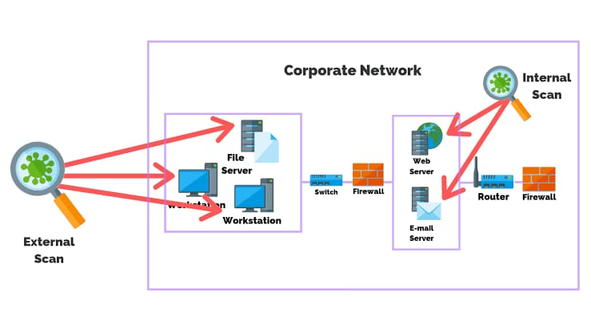
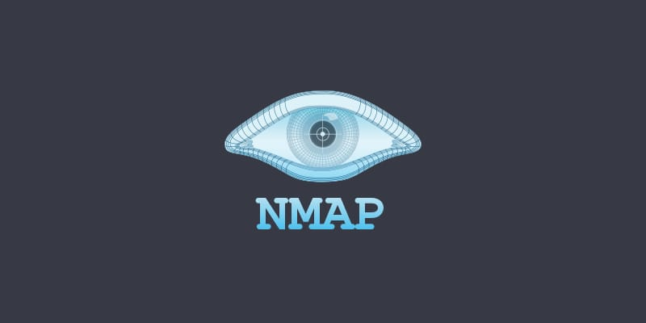
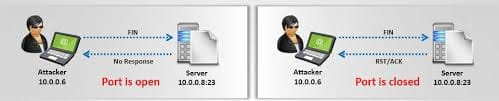

Network scanning is one of the components of intelligence gathering and information retrieving mechanism an attacker used to create an overview scenario of the target organization (target organization: means the group of people or organization which falls in the prey of the Hacker).
Vulnerability scanning is performed by pen-testers to detect the possibility of network security attacks. This technique led hackers to identify vulnerabilities such as missing patches, unnecessary services, weak authentication, or weak encryption algorithms. So a pen-tester and ethical hacker list down all such vulnerabilities found in an organization's network.
Effectively test an objective machine or organization for weaknesses that can be abused.
It incorporates the utilization of apparatuses like dialers, network mappers, sweepers, port scanners, and weakness scanners to check information.
Scanning Types
Scanning is of three types:
-
Network Scanning
Objectives Of Network Scanning
- To discover live hosts/computer, IP address, and open ports of the victim.
- To discover services that are running on a host computer.
- To discover the Operating System and system architecture of the target.
- To discover and deal with vulnerabilities in Live hosts.
- Port Scanning
- Vulnerability Scanning

Scanning Methodologies
- Hackers and Pen-testers check for Live systems.
- Check for open ports (The technique is called Port Scanning, which will be discussed in next section)
- Scanning beyond IDS (Intrusion Detection System)
- Banner Grabbing: is the method for obtaining information regarding the targeted system on a network and services running on its open ports. Telnet and ID Serve are the tools used mainly to perform a Banner-grabbing attack. This information may be used by intruders/hackers to portray the lists of applicable exploits.
- Scan for vulnerability
- Prepare Proxies

Port Scanning
It is a conventional technique used by penetration testers and hackers to search for open doors from which hackers can access any organization's system. During this scan, hackers need to find out those live hosts, firewalls installed, operating systems used, different devices attached to the system, and the targeted organization's topology. Once the Hacker fetches the victim organization's IP address by scanning TCP and UDP ports, the Hacker maps this organization's network under his/her grab. Amap is a tool to perform port scanning.
TCP/IP handshake
Before moving to the scanning techniques, we have to understand the 3-way TCP/IP handshaking process. In computer terms, handshaking means the automated process used to set dynamic parameters of a communication channel between two entities using some protocols. Here, TCP (Transmission Control Protocol) and IP (Internet Protocol) are the two protocols used for handshaking between a client and a server. Here first, the client sends a synchronization packet for establishing a connection, and the server listens to and responds with a syn/ack packet to the client. The client again responds to the server by sending an ack packet. Here SYN denotes synchronization, which is used to initialize connections between the client and the server in packets. ACK denotes acknowledgment, which is used to establish a connection between two hosts.
Scanning techniques mainly used:
- SYNScan: SYN scan or stealth doesn't complete the TCP three-way handshake technique. A hacker sends an SYN packet to the victim, and if an SYN/ACK frame is received back, then the target would complete the connection, and the port is in a position to listen. If an RST is retrieved from the target, it is assumed that the port is closed or not activated. SYN stealth scan is advantageous because a few IDS systems log this as an attack or connection attempt.
- XMASScan: XMAS scan send a packet which contains URG (urgent), FIN (finish) and PSH (push) flags. If there is an open port, there will be no response; but the target responds with an RST/ACK packet if the port is closed. (RST=reset).
- FINScan: A FIN scan is similar to an XMAS scan except that it sends a packet with just the FIN (finish) flag and no URG or PSH flags. FIN scan receives the same response and has the same limitations as XMAS scans.
- IDLEScan: An IDLE scan uses a spoofed/hoax IP to send the SYN packet to the target by determining the port scan response and IP header sequence number. Depending on the response of the scan, the port is determined, whether open or closed.
- Inverse TCP Flag Scan: Here, the attacker sends TCP probe packets with a TCP flag (FIN, URG PSH) or no flags. If there is no response, it indicates that the port is open, and RST means it is closed.
- ACK Flag Probe Scan: Here, the attacker sends TCP probe packets where an ACK flag is set to a remote device, analyzing the header information (TTL and WINDOW field). The RST packet signifies whether the port is open or closed. This scan is also used to check the target's/victim's filtering system.

Vulnerability Scanning
It is the proactive identification of the system's vulnerabilities within a network in an automated manner to determine whether the system can be exploited or threatened. I this case, the computer should have to be connected to the internet.
Steps
If a hacker wants to perform ICMP (Internet Control Message Protocol) scanning, it can be done manually. The steps are:- Open Windows OS
- Press Win+R (Run) buttons in combination
- In the Run, type- cmd
- Type the command: ping IP Address or type: ping DomainName (example : ping facebook.com)
- Nmap: extract information such as live hosts on the network, services, type of packet filters/firewalls, operating systems, and OS versions.
- Angry IP Scanner: scans for systems available in a given input range.
- Hping2/Hping3: are command-line packet crafting and network scanning tools used for TCP/IP protocols.
- Superscan: is another powerful tool developed by Mcafee, which is a TCP port scanner, also used for pinging.
- ZenMap: is another very powerful Graphical user interface (GUI) tool to detect the type of OS, OS version, ping sweep, port scanning, etc.
- Net Scan Tool Suite Pack: is a collection of different types of tools that can perform a port scan, flooding, webrippers, mass emailers; and This tool is a trial version, but paid versions are also available.
- Wireshark and Omnipeak are two powerful and famous tools that listen to network traffic and act as network analyzers.
Additional Info
- Names of other famous PCs tools are Advanced Port Scanner, Net Tools, MegaPing, CurrPorts, PRTG Network Monitor, SoftPerfect Network Scanner, Network Inventory Explorer, etc.
- There are various other scanners available free and inbuilt in Kali Linux OS.
- Tools and software that are used in mobiles as scanners include the names such as Umit Network Scanner, Fing, IP network Scanner, PortDroid network Analysis, Panm IP Scanner, Nessus Vulnerability Scanner, Shadow Sec Scanner, etc.
Countermeasures Against Scanning
- Configure firewalls and IDS to detect and block probes.
- Use custom rules to lock down the network and block unwanted ports.
- Run port Scanning tools to determine whether the firewall accurately detects the port scanning activities.
- Security Experts should ensure the proper configuration of anti-scanners and anti-spoofing rules.
- Security experts of an organization must also ensure that the IDS, routers, and firewall firmware are updated to their latest releases.